전기공사산업기사 (2015-09-19 기출문제)
1과목: 전기응용
1. 다음 중 전해 정제법이 이용되고 있는 금속 중 최대 규모로 행하여지는 대표 금속은?
- 구리
- 철
- 납
- 망간
(정답률: 84%)

2. 전기철도의 전기차 주전동기 제어방식 중 특성이 다른 것은?
- 개로 제어
- 계자 제어
- 단락 제어
- 브리지 제어
(정답률: 58%)
3. 열이 이동하는 방식 중 복사에 해당하는 것은?
- 도체를 통하여 이동한다.
- 기체를 통하여 이동한다.
- 액체를 통하여 이동한다.
- 전자파로 이동한다.
(정답률: 72%)
4. 저압 아크로에 해당되지 않는 것은?
- 제철
- 제강
- 합금의 제조
- 공중 질소고정
(정답률: 73%)
5. 평균 구면광도 80cd의 전구 4개를 지름 8m 원형의 방에 점등하였다. 조명률을 0.4라고 하면 방의 평균 조도[lx]는?
- 18
- 22
- 28
- 32
(정답률: 50%)
6. 비닐막 등의 접착에 주로 사용하는 가열 방식은?
- 저항 가열
- 유도 가열
- 아크 가열
- 유전 가열
(정답률: 76%)
7. 주로 옥외 조명기구로 사용되며 실내에서는 체육관 등 넓은 장소에 사용되는 조명 기구는?
- 다운 라이트
- 트랙 라이트
- 투광기
- 팬던트
(정답률: 77%)
8. 다음 중 금속의 이온화 경향이 가장 큰 것은?
- Ag
- Pb
- Na
- Sn
(정답률: 76%)
9. 그림과 같은 전동차선의 조가법은?
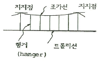
- 직접 조가식
- 단식 커티너리식
- 변형 Y형 단식 커티너리식
- 복식 커티너리식
(정답률: 70%)
10. 다음 합금 발열체 중 최고 온도가 가장 낮은 것은?
- 니크롬 제1종
- 니크롬 제2종
- 철크롬 제1종
- 철크롬 제2종
(정답률: 64%)
11. 소형이면서 대전력용 정류기로 사용하는 것은?
- 게르마늄 정류기
- SCR
- CdS
- 셀렌 정류기
(정답률: 72%)
12. 서로 다른 두 개의 금속이나 반도체를 접속하여 전류를 인가하면 접합부에서 열이 발생하거나 흡수되는 현상은?
- 제벡 효과
- 펠티에 효과
- 톰슨 효과
- 핀치 효과
(정답률: 69%)
13. 모든 방향의 광도가 균일하게 1000cd인 광원이 있다. 이것을 직경 40cm의 완전 확산성 구형 글로브의 중심에 두었을 때 그 휘도가 1cm2당 0.56cd가 되었다 이 글로브의 투과율은 약 몇 %인가? (단, 글로브 내면의 반사는 무시한다.)
- 65
- 70
- 83
- 92
(정답률: 34%)
14. 터널 다이오드의 용도로 가장 널리 사용되는 것은?
- 검파 회로
- 스위칭 회로
- 정류기
- 정전압 소자
(정답률: 67%)
15. 전구의 필라멘트나 열전대 용접에 알맞은 방법은?
- 점 용접
- 돌기 용접
- 심 용접
- 불활성 용접
(정답률: 68%)
16. 축전지를 사용할 때 극판이 휘고 내부저항이 매우 커져서 용량이 감퇴되는 원인은?
- 전지의 황산화
- 과도 방전
- 전해액의 농도
- 감극 작용
(정답률: 62%)
17. 직선 궤도에서 호륜궤조를 반드시 설치해야 하는 곳은?
- 분기 개소
- 병용 궤도
- 고속운전 구간
- 교량 위
(정답률: 70%)
18. 다음 전동기 중에서 속도 변동률이 가장 큰 것은?
- 3상 농형 유도전동기
- 3상 권선형 유도전동기
- 3상 동기전동기
- 단상 유도전동기
(정답률: 66%)
19. 15kW 이상의 중형 및 대형기의 기동에 사용되는 농형 유도전동기의 기동법은?
- 기동 보상기법
- 전전압 기동법
- 2차 임피던스 기동법
- 2차 저항 기동법
(정답률: 61%)
20. 전기 기관차의 자중이 150t이고, 동륜상의 중량이 95t이라면 최대 견인력[kg]은? (단, 궤조의 점착 계수는 0.2라한다.)
- 19000
- 25000
- 28500
- 38000
(정답률: 67%)
2과목: 전력공학
21. 지중 케이블의 금속체 전식 방지를 위한 배류 방식이 아닌 것은?
- 유전 양극 방식
- 직접 배류 방식
- 선택 배류 방식
- 강제 배류 방식
(정답률: 42%)
22. 과전류 차단기의 설치 장소로 적합하지 않은 곳은?
- 수용가의 인입선 부근
- 고압배전 선로의 인출 장소
- 직접접지 계통에 설치한 변압기의 접지선
- 역률 조정용 고압 병렬 콘덴서 뱅크의 분기선
(정답률: 54%)
23. 송전선로의 저항을 R, 리액턴스를 X라 하면, 일반적인 경우 R과 X의 관계로 옳은 것은?
- R > X
- R < X
- R = X
- R = 2X
(정답률: 52%)
24. ACSR 전선을 154kV의 송전선에 사용할 경우 최대 송전전력을 70MW, 역률을 0.8로 하면 가장 경제적인 전선의 굵기는 약 몇 mm2인가? (단, 전선의 무게 8.89kg/mm2 • m, 저항률은 1/35Ω • mm2/m, 전선 1kg의 가격은 25000원/kg, 1년간의 이자와 상각비와의 합계 P=0.15, 송전선로의 연간 이용률은 70%이다.)
- 132.8
- 145.7
- 152.3
- 166.5
(정답률: 17%)
25. 현수애자 4개를 1련으로 한 66kV 송전선로가 있다. 현수애자 1개의 절연저항이 1500MΩ이고, 경간을 250m로 할 때 1km당의 누설 컨덕턴스는 약 몇 ℧인가?
- 0.17×10-9
- 0.33×10-9
- 0.67×10-9
- 0.93×10-9
(정답률: 37%)
26. 자동경제급전(ELD : Economic Load Distribution)의 주 목적은?
- 발전 연료비의 절약
- 계통 주파수를 유지하는 것
- 수용가의 낭비전력을 자동 선택
- 경제성이 높은 수용가의 자동 선택
(정답률: 34%)
27. 전력용 콘덴서의 회로에 방전코일을 설치하는 주된 목적은?
- 합성 역률의 개선
- 전압의 파형 개선
- 콘덴서의 등가용량 증대
- 전원 개방 시 잔류 전하를 방전시켜 인체의 위험 방지
(정답률: 57%)
28. 송전 개통에서 절연협조의 기본이 되는 것은?
- 애자의 섬락 전압
- 권선의 절연 내력
- 피뢰기의 제한 전압
- 변압기 부싱의 섬락 전압
(정답률: 44%)
29. 화력 발전소에서 연도의 맨 끝에 설치하는 장치는?
- 절탄기
- 온수기
- 공기 예열기
- 터빈
(정답률: 34%)
30. 수전단 전압 66kV, 전류 100A, 선로 저항 10Ω, 선로 리액턴스 15Ω인 3상 단거리 송전선로의 전압강하율은 몇 %인가? (단, 수전단의 역률은 0.8이다.)
- 2.57
- 3.25
- 3.74
- 4.46
(정답률: 25%)
31. 석탄연소 화력발전소에서 사용되는 집진장치의 효율이 가장 큰 것은?
- 전기식 집진장치
- 수세식 집진장치
- 원심력식 집진장치
- 직렬결합식 집진장치
(정답률: 46%)
32. 변압기의 기계적 보호계전기인 부흐홀츠 계전기의 설치 위치로 알맞은 것은?
- 컨서베이터 내부
- 유면 위의 탱크 내
- 변압기의 고압측 부싱
- 주탱크와 컨서베이터를 연결하는 파이프의 관중
(정답률: 43%)
33. 연가를 하는 주된 목적은?
- 미관상 필요
- 선로 정수의 평형
- 유도뢰의 방지
- 직격뢰의 방지
(정답률: 62%)
34. 배전선로에서 고장전류를 차단할 수 있는 장치는?
- 단로기
- 리클로저
- 선로 개폐기
- 구분 개폐기
(정답률: 40%)
35. 인장 강도는 작으나 도전율이 높아 옥내 배선용으로 주로 사용되는 전선은?
- 연동선
- 알루미늄선
- 경동선
- 동복강선
(정답률: 49%)
36. 유효낙차 300m인 충동수차에서 노즐에서 분출되는 유수의 이론적인 분출속도는 약 몇 m/sec인가?
- 47
- 57
- 67
- 77
(정답률: 26%)
37. 송전단 전압이 161kV, 수전단 전압이 155kV, 송수전단 전압의 상차각이 40°, 리액턴스가 50Ω일 때, 선로 손실을 무시하면 송전전력은 약 몇 MW인가? (단, cos 40°=0.766, cos 50°=0.643이다.)
- 107
- 321
- 408
- 580
(정답률: 36%)
38. 고압 배전선로의 중간에 승압기를 설치하는 주목적은?
- 역률 개선
- 전력 손실의 감소
- 전압 변동률의 감소
- 말단의 전압 강하의 방지
(정답률: 37%)
39. 정전용량 C[F]의 콘덴서를 △결선해서 3상 전압 V[V]를 가했을 때의 충전용량과 같은 전원을 Y결선으로 했을 때 충전용량의 비(△결선/Y결선)는?
- 3
- √3
- 1/3
- 1/√3
(정답률: 25%)
40. 변류기 개방 시 2차측을 단락하는 이유는?
- 1차측 과전류 방지
- 2차측 과전류 보호
- 측정 오차 방지
- 2차측 절연 보호
(정답률: 56%)
3과목: 전기기기
41. 동기기의 전기자 저항을 r[Ω], 반작용 리익턴스를 xa[Ω], 누설 리액턴스를 xe[Ω]라 하면 동기 임피던스는?
- r+j(xa+xe)
- j(xa+xe)
- e+jxa
- r+j(xa-xe)
(정답률: 44%)
42. 동기 발전기의 자기 여자 현상을 방지하는 방법이 아닌 것은?
- 발전기 여러 대를 모선에 병렬로 접속한다.
- 수전단에 동기 조상기를 접속한다.
- 수전단에 리액턴스를 병렬로 접속한다.
- 단락비가 작은 발전기를 사용한다.
(정답률: 44%)
43. 공장에서 역률을 개선하려고 할 때 적용하는 기기가 아닌 것은?
- 동기 조상기
- 콘덴서용 직렬 리액터
- 전력용 콘덴서
- 회전 변류기
(정답률: 43%)
44. 발전기나 변압기 권선의 층간 단락 사고를 검출하는 계전기는?
- 방향 단락 계전기
- 과전류 계전기
- 비율 차동 계전기
- 과전압 계전기
(정답률: 43%)
45. 반파 정류회로에서 직류전압 200V를 얻는 데 필요한 변압기 2차 상전압은 약 몇 V인가? (단, 부하는 순저항, 변압기 내 전압강하를 무시하면 정류기 내의 전압강하는 5V로 한다.)
- 68
- 113
- 333
- 455
(정답률: 34%)
46. 전전압 기동용량이 50kVA인 3상 유도 전동기를 Y-△로 기동하는 경우의 기동 용량은 약 몇 kVA인가?
- 17
- 25
- 47
- 53
(정답률: 40%)
47. 전기자 지름 0.1m의 직류 발전기가 1.5kW 의 출력에서 1700rpm으로 회전하고 있을 때 전기자 주변속도는 약 몇 m/s인가?
- 8.9
- 9.80
- 10.89
- 11.80
(정답률: 36%)
48. 3상 동기 전동기에 있어서 제동권선의 역할은?
- 효율 향상
- 역률 개선
- 난조 방지
- 출력 증가
(정답률: 58%)
49. 대형 직류 발전기에서 전기자 반작용을 보상하는데 이상적인 것은?
- 보극
- 보상권선
- 탄소 브러시
- 균압환
(정답률: 46%)
50. SCR의 설명 중 옳지 않은 것은?
- 스위칭 소자이다.
- P-N-P-N 소자이다.
- 쌍방향성 사이리스터이다.
- 직류, 교류, 전력 제어용으로 사용한다.
(정답률: 47%)
51. 동기 발전기의 전기자 권선을 단절권으로 하면 어떤 효과가 있는가?
- 고조파가 제거된다.
- 절연이 잘된다.
- 병렬 운전이 가능해 진다.
- 코일단이 증가한다.
(정답률: 52%)
52. 권선형 유도 전동기의 2차 저항을 변화시켜 속도를 제어하는 경우 최대 토크는?
- 항상 일정하다.
- 2차 저항에만 비례한다.
- 최대 토크시 생기는 점의 슬립에 비례한다.
- 최대 토크 시 생기는 점의 슬립에 반비례한다.
(정답률: 47%)
53. 3상 유도전동기의 특성 중 비례추이 할 수 없는 것은?
- 역률
- 출력
- 동기 와트
- 2차 전류
(정답률: 43%)
54. 3상 변압기의 임피던스 Z[Ω]이고, 선간전압 V[kV], 정격용량 P[kVA]일 때, %Z는?
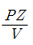
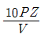
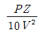
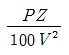
(정답률: 51%)
55. 권선형 유도 전동기의 저항 제어법의 장점은?
- 부하에 대한 속도변동이 크다.
- 구조가 간단하며, 제어조작이 용이하다.
- 역률이 좋고, 운전 효율이 양호하다.
- 전부하로 장시간 운전하여도 온도 상승이 적다.
(정답률: 46%)
56. 단상 변압기의 병렬 운전 조건 중 옳지 않은 것은?
- 권수비와 1,2차의 정격전압이 같을 것
- 권선의 저항과 누설 리액턴스의 비가 같을 것
- %저항 강하 및 리액턴스 강하가 같을 것
- 출력이 같을 것
(정답률: 46%)
57. 60Hz, 4극 5kW인 3상 유도전동기가 있다. 전부하시 회전수가 1500rpm일 때 발생 토크는 약 몇 kg·m인가?
- 9.34
- 7.43
- 5.52
- 3.25
(정답률: 33%)
58. 단상 유도전동기의 기동 방법에서 기동 토크의 크기가 가장 큰 것은?
- 반발 유도형
- 반발 기동형
- 콘덴서 기동형
- 분상 기동형
(정답률: 52%)
59. 전기자 도체의 총수 400, 10극 단중 파권으로 매극의 자속수가 0.02wb인 직류 발전기가 1200rpm의 속도로 회전할 때 유도 기전력[V]은?
- 800
- 750
- 720
- 700
(정답률: 31%)
60. 권수비 60인 단상 변압기의 전부하 2차 전압 200V, 전압변동률 3%일 때 1차 단자전압[V]은?
- 12360
- 12720
- 13625
- 18760
(정답률: 47%)
4과목: 회로이론
61. 3상 대칭분 전류를 I0, I1, I2라 하고 선전류를 Ia, Ib, Ic라고 할때 Ib는 어떻게 되는가?
- I0+a2I1+aI2
- I0+aI1+a2I2
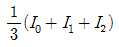
- I0+I1+I2
(정답률: 43%)
62. 공칭 임피던스 R=600Ω, 차단 주파수 fh=60kHz인 정 K형 고역 필터에서 L[mH], C[㎌] 값은?
- 7.96mH, 0.0221㎌
- 0.796mH, 0.00221㎌
- 0.1592mH, 0.0044㎌
- 1.592mH, 0.0044㎌
(정답률: 17%)
63. 그림과 같은 램프함수의 라플라스 변환식은?
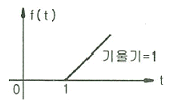
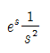
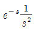
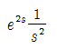
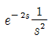
(정답률: 40%)
64. 4단자 회로망에서 영상 임피던스 Z01과 Z02를 같게 하려면 4단자 정수간에 서로 어떤 관계가 되어야 하는가?
- A = B
- B = C
- C = D
- A = D
(정답률: 51%)
65.
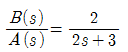
의 전달함수를 미분방정식으로 표시하면? (단,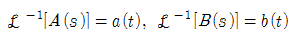
이다.)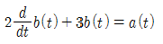
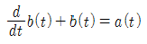
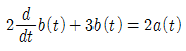
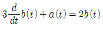
(정답률: 39%)
66. 그림과 같은 회로에 있어서 스위치 S를 닫았을 때 L에 가해지는 전압은? (단, i(0)=0이다.)
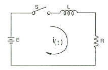
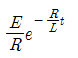
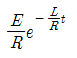
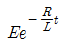
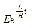
(정답률: 26%)
67. f(t)=e-atsintcost를 라플라스 변환하면?
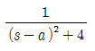
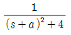
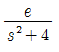
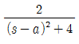
(정답률: 37%)
68. 3상 Y결선 회로에서 소비하는 전력은 몇 W인가? (단, 임피던스 Z의 단위는 Ω이다.)
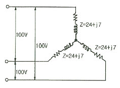
- 3072
- 1536
- 768
- 384
(정답률: 30%)
69. 그림의 회로에서 단자 b-c에 나타나는 전압 Vbc는 약 몇 V인가?
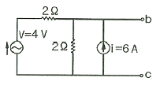
- 4
- 6
- 8
- 10
(정답률: 24%)
70. RC 직렬회로의 양단에 e=50+141.4sin2wt+212.1sin4wt[A]인 전압을 인가할 때 제 2고조파 전류의 실효값은 몇 A인가? (단, R=8 Ω, 1/wC=12 Ω이다.)
- 6
- 8
- 10
- 12
(정답률: 33%)
71. 그림에서 a-b 단자의 전압이 50∠0°[V], a-b 단자에서 본 능동 회로망의 임피던스가 Z=6+j8Ω일 때, a-b 단자에 임피던스 Z=2-j2Ω을 접속하면 이 임피던스에 흐르는 전류[A]는 얼마인가?
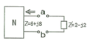
- 4-j3
- 4+j3
- 3-j4
- 3+j4
(정답률: 38%)
72. 어떤 계에 임펄스 함수(δ함수)가 입력으로 가해졌을 때 시간함수 e-2t가 출력으로 나타났다. 이 계의 전달함수는?
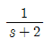
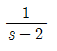
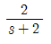
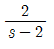
(정답률: 42%)
73. RLC 직렬회로에서 회로 저항의 값이 다음의 어느 때이어야 이 회로가 부족제동이 되었다고 하는가?
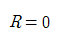
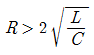
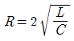
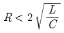
(정답률: 40%)
74. 그림의 T회로에서 전류 I1은 몇 A인가?
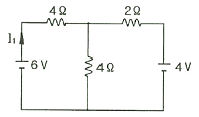
- 0.625
- 1.333
- 1.5⑤
- 1.673
(정답률: 25%)
75. 횡축에 대칭인 삼각파 교류전압의 평균값[V]은?
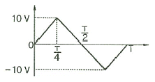
- 3
- 5
- 8
- 10
(정답률: 37%)
76. 어떤 회로에 전압 e(t)=Emcos(wt+θ)[V]를 가했더니 전류 i(t)Imcos(wt+θ+∅)[A]가 흘렀다. 이때에 회로에 유입하는 평균전력[W]은?
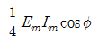
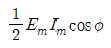
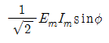
- EmImsin∅
(정답률: 43%)
77. 그림과 같은 결합 회로의 등가 인덕턴스[H]는?
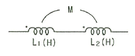
- L1+L2+M
- L1+L2-M
- L1+L2+2M
- L1+L2-2M
(정답률: 48%)
78. 불평형 3상 전류 Ia=15+j2[A], Ib=-20-j14[A], Ic=-3+j10[A]일 때, 영상전류 I0는 약 몇 [A]인가?
- 2.67+j0.36
- -2.67-j0.67
- 15.7-j3.25
- 1.91+j6.24
(정답률: 46%)
79. 그림과 같은 회로에서 전압계 3개로 단상전력을 측정할 때 유효전력[W]은?
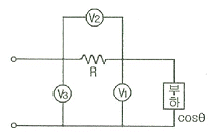
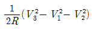
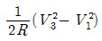
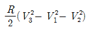
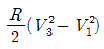
(정답률: 37%)
80. 부하에 100∠30°[V]의 전압을 가하였을 때 10∠60°[A]의 전류가 흘렀다면 부하에서 소비되는 유효전력은 약 몇 W인가?
- 400
- 500
- 682
- 866
(정답률: 43%)
5과목: 전기설비
81. 변압기 전로에서 최대 사용 전압이 8000V인 권선으로서 중성점 접지식 전로(중성선을 가지는 것으로서 그 중성선에 다중접지를 하는 것에 한한다.)에 접속하는 것의 시험 전압은 최대 사용 전압의 몇 배인가?
- 0.92
- 1.1
- 1.25
- 1.5
(정답률: 35%)
82. 60kV 특별 고압 가공 전선로를 시가지 등에 시설하는 경우 전선의 지표상 최소 높이는 약 몇 m인가?
- 8
- 8.36
- 10.12
- 10.36
(정답률: 24%)
83. 고압 지중전선이 지중 약전류 전선 등과 접근하거나 교차하는 경우에 상호의 이격거리가 몇 cm 이하인 때에는 두 전선이 직접 접촉하지 아니하도록 하여야 하는가?
- 15
- 20
- 30
- 40
(정답률: 41%)
84. 154000V 특별고압 가공전선로를 시가지에 위험의 우려가 없도록 시설하는 경우, 지지물로 A종 철주를 사용한다면 경간은 최대 몇 m 이하인가?
- 50
- 75
- 150
- 200
(정답률: 34%)
85. 사용전압이 35000V 이하인 특별고압 가공전선이 건조물과 제 2차 접근상태로 시설되는 경우, 특별고압 가공전선로의 보안 공사는?
- 고압 보안공사
- 제 1종 특고압 보안공사
- 제 2종 특고압 보안공사
- 제 3종 특고압 보안공사
(정답률: 42%)
86. 고압 전로와 비접지식의 저압 전로를 결합하는 변압기로 금속제의 혼촉 방지판이 있고, 또한 그 혼촉 방지판에 제 2종 접지공사를 한 것에 접촉하는 저압 전선을 옥외에 시설할 때 저압 가공 전선로의 전선으로 사용할 수 있는 것은?
- 케이블
- 다심형 전선
- 600V 비닐 절연 전선
- 옥외용 비닐 절연 전선
(정답률: 40%)
87. 출퇴표시등 회로에 전기를 공급하기 위한 변압기는 1차측 전로의 대지전압이 (가)V 이하, 2차측 전로의 사용전압이 (나)V 이하인 절연 변압기를 사용하여야 한다. (가)와 (나)에 알맞은 것은?
- 300,40
- 300,60
- 400,40
- 400,60
(정답률: 50%)
88. 특고압용 제2종 보안장치 또는 이에 준하는 보안장치 등이 되어 있지 않은 25kV 이하인 특고압 가공전선로의 지지물에 시설하는 통신선 또는 이에 직접 접속하는 통신선으로 사용할 수 있는 것은?
- 지름 2mm의 인장강도 8.0kN 의 경동선
- 지름 2.6mm 이상의 절연전선
- 광섬유 케이블
- 인장강도 8.0kN의 연동선
(정답률: 36%)
89. 가공 전선로에 사용되는 특고압 전선용의 애자 장치에 대한 갑종풍압하중은 그 구성재의 수직투영면적 1m2에 대한 풍압으로 몇 Pa를 기초로 계산하여야 하는가?
- 588
- 745
- 660
- 1039
(정답률: 34%)
90. 방전등용 안정기로부터 방전관까지의 전로를 무엇이라고 하는가?
- 소세력 회로
- 관등 회로
- 급전 회로
- 약전류 전선로
(정답률: 53%)
91. 특별고압 가공 전선로에서 철탑(단주 제외)의 경간은 몇 m 이하로 하여야 하는가?
- 400
- 500
- 600
- 700
(정답률: 49%)
92. 발전기의 용량에 관계없이 자동적으로 이를 전로로부터 차단하는 장치를 시설하여야 하는 경우는?
- 수차 압유 장치의 유압이 현저히 저하한 경우
- 과전류가 생긴 경우
- 스트러스 베어링의 온도가 급상승한 경우
- 발전기의 내부에 고장이 생긴 경우
(정답률: 42%)
93. 단상 2선식인 저압의 전선로 중 절연부분의 전선과 대지간의 절연저항은 사용전압에 대한 누설전류가 최대 공급전류의 몇 배를 넘지 아니하도록 유지하여야 하는가?
- 1/500
- 1/1000
- 1/1500
- 1/2000
(정답률: 36%)
94. 수소 냉각식 발전기안의 수소의 순도가 몇 % 이하로 저하된 경우에 경보하는 장치가 시설되어야 하는가?
- 65
- 85
- 95
- 98
(정답률: 53%)
95. 철도 궤도 또는 자동차도 전용 터널 안의 전선로의 시설 중에서 기준에 적합하지 않은 것은?
- 저압 전선으로 지름 2.0mm의 경동선의 절연전선을 사용하였다.
- 저압 전선으로 인장강도 2.30kN 이상의 절연전선을 사용하였다.
- 저압 전선을 애자사용 공사에 의하여 시설하고 이를 노면상 2.5m 이상의 높이로 유지하였다.
- 저압 전선을 가요전선관 공사에 의하여 시설하였다.
(정답률: 26%)
96. 농사용 저압 가공 전선로 시설에 대한 설명으로 틀린 것은?
- 목주의 말구 지름은 9cm 이상일 것
- 지름 2.6mm 이상의 경동선일 것
- 지표상의 높이는 3.5m 이상일 것
- 전선로의 경간은 30m 이하일 것
(정답률: 20%)
97. 저압 옥내간선에서 분기하여 전기사용 기계기구에 이르는 저압 옥내전로는 저압 옥내간선과의 분기점에서 전선의 길이가 몇 m 이하인 곳에 개폐기 및 과전류 차단기를 시설하여야 하는가?
- 1.5
- 2
- 2.5
- 3
(정답률: 25%)
98. 터널 내에 3300V 전선로를 케이블 공사로 시설하려고 한다. 케이블을 조영재의 옆면 또는 아랫면에 붙일 경우에 케이블의 지지점간의 거리는 몇 m 이하로 하여야 하는가?
- 1
- 1.5
- 2
- 2.5
(정답률: 33%)
99. 전기부식방지를 위한 귀선의 시설방법에 대한 설명으로 틀린 것은?
- 귀선은 부극성으로 할 것
- 이음매 하나의 저항은 그 레일의 길이 5m의 저항에 상당한 값 이하일 것
- 귀선용 레일은 특수한 곳 이외에는 길이 30m 이상이 되도록 연속하여 용접할 것
- 단면적 38mm2이상, 길이 60㎝이상의 연동 연선을 사용한 본드 2개 이상을 용접함으로써 레일 용접에 갈음할 수 있을 것
(정답률: 26%)
100. 저압 가공전선으로 케이블을 사용하는 경우이다. 케이블을 조가용선에 행거로 시설하였을 때 사용전압이 고압인 경우에는 행거의 간격을 몇 cm 이하로 시설하여야 하는가?
- 30
- 50
- 75
- 100
(정답률: 41%)